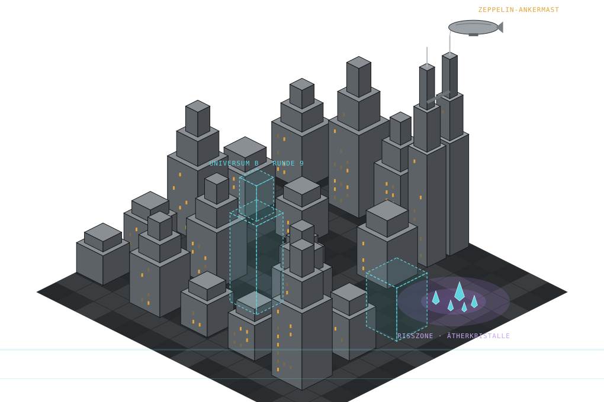

The look: grey, isometric, Art Deco
Grey and moody, isometric like the classics of the 90s, with Art Deco skyscrapers, neon and zeppelins. The only strong colours belong to the ether: cyan for other universes, violet for rifts.

Technically we're planning low-poly 3D in Godot with a fixed isometric camera and a dithering shader – the look of the 90s without drawing everything as pixel art.